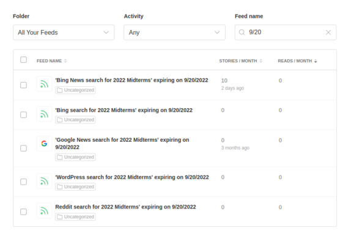

Did you ever want to monitor a news topic for only a few days? That's what JOOC Box is for.
"JOOC" is Internet slang for "Just Out Of Curiosity"!
Enter a query that you want to follow and how many days you want to follow it. JOOC Box will generate RSS feeds with that query for Bing, Bing News, Google News, Reddit, and WordPress. Additionally, it will give every RSS feed a title with the "expiration date" of your interest in that feed. It'll look like this:
'Google News search for 2022 Midterms' expiring on 9/20/2022
Those five generated RSS feeds are bundled into an OPML file which you can use to import the feeds to your favorite feed reader. Keeping track of and removing feeds is as simple as searching for the expiration date in your RSS feed reader.

JOOC Box will create and your computer will automatically download a text file when you run it. That's the OPML file. It has a title that looks like this: